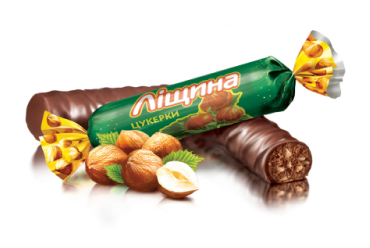

Всім привіт, я Ямі і я мопс, який дуже сильно полюбляє солодощі.
Сьогодні я розкажу вам, чому саме солодощі і чому вони так важливі в нашому житті.
Доречі, моє імʼя з англійської мови перекладається як “Смачний”.


Червоний мак
Пралене з додаванням карамельної крихти, пасти ядер горіхів фундука та мигдалюпокрите шоколадною глазурʼю

Сливки-ленивки
Світлі вафельні листи, поєднані молочно-вершковою начинкою та покриті глазур’ю.

Ліщина
Праліне з додаванням подрібненої та тертої ліщини та мигдалю, покрите шоколадною глазур’ю.